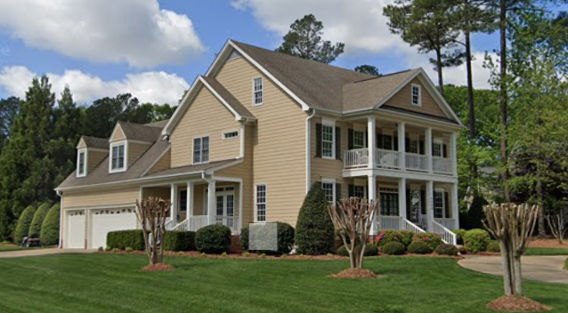

Hobbies:
- Writing: I enjoy being able to write fiction and tell the stories that I have. I want the stories I write to not just be entertaining, but also give a message that the audience can take and consider in their everyday life. I have managed to win a poetry competition in the 11th grade for the General Federation of Women's Clubs.
- History: I find an emense fascination with history, with the chronicles of humanity and how it is that we managed to reach where we are today. It also helps give a guideline for what to do today, to follow or avoid the actions of the past, thus making it easier for me to figure out what to do now.
- Reading: Over the last few years, I went back into reading for recreational enjoyment. Most of the types that I enjoy reading are some of the classics and also thrillers. My favorite novel is John Grisham's The Firm.
- Watching Movies: Since taking film classes, I have found enjoyment with not only watching movies, but also analyzing them and figuring out what it is that I enjoyed about them and how they function. I want to be able to figure out what it is that makes a movie or scene great so that I know what to do with potential projects down the line for me. Some of my favorite movies include Forrest Gump, The Shawshank Redemption, and United 93.
Hometown:
After my birth, I lived in Wyckoff, New Jersey for four years. Due to a need to have a larger home, my family moved in November 2005. I have lived in Apex, North Carolina ever since.
